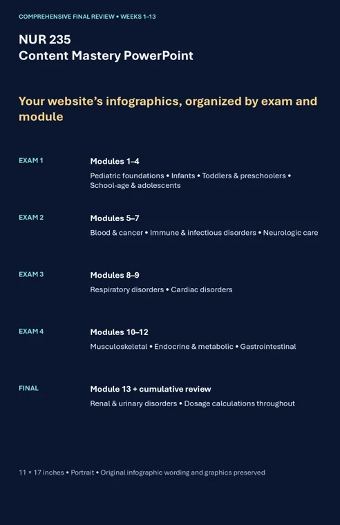
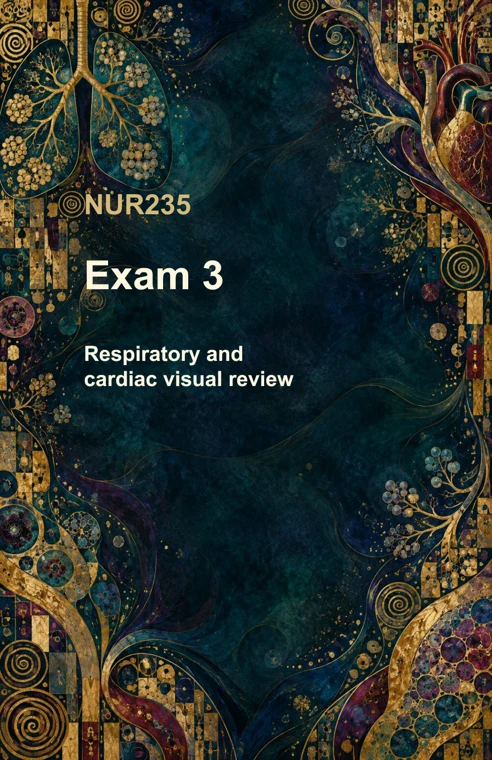
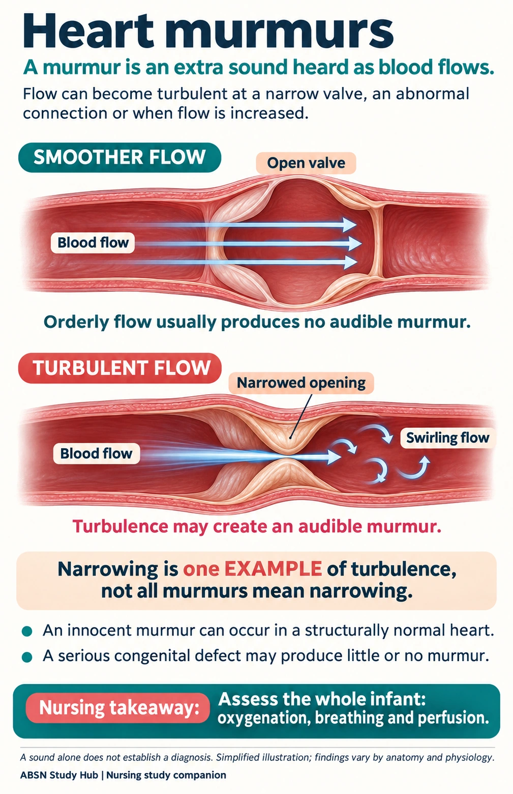
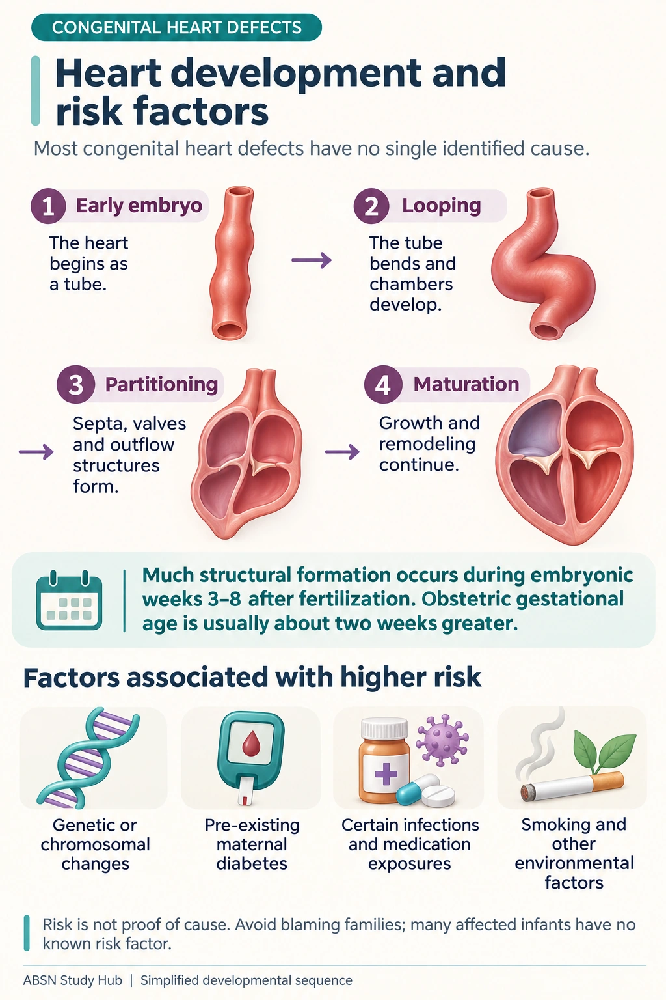
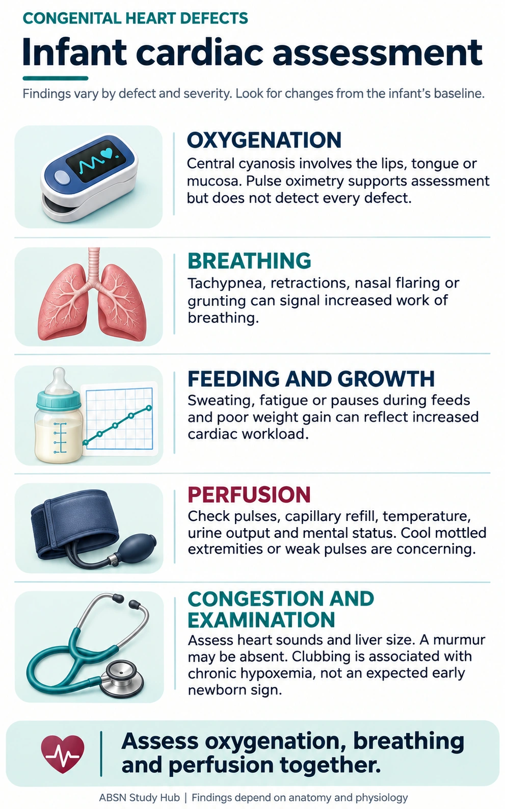
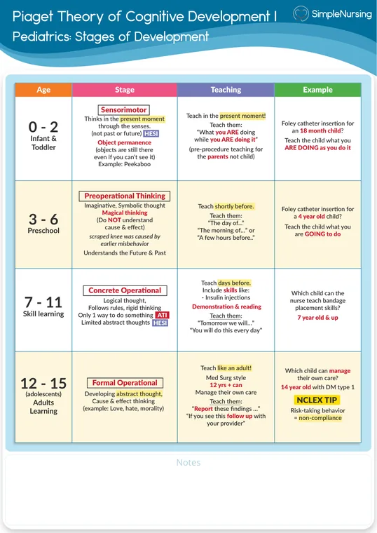
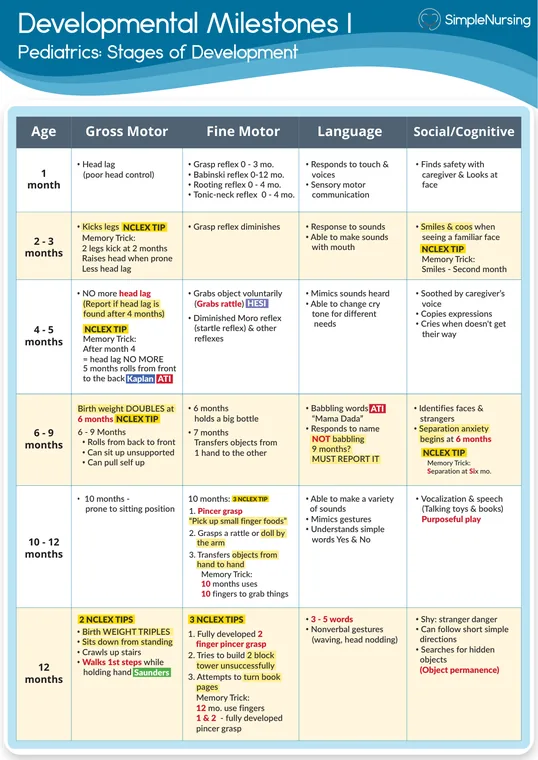
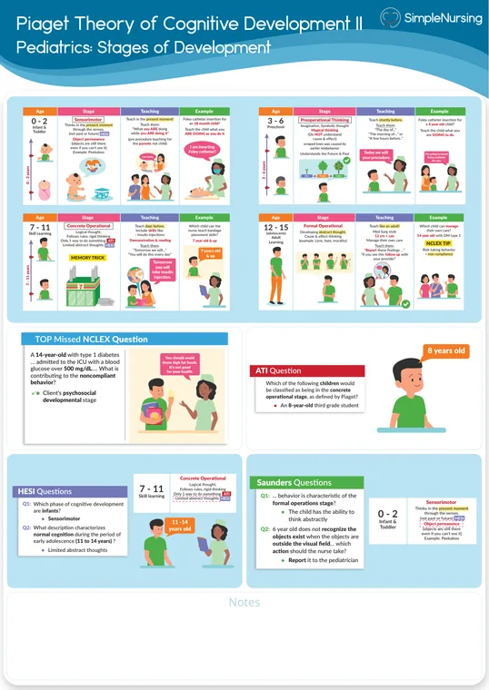
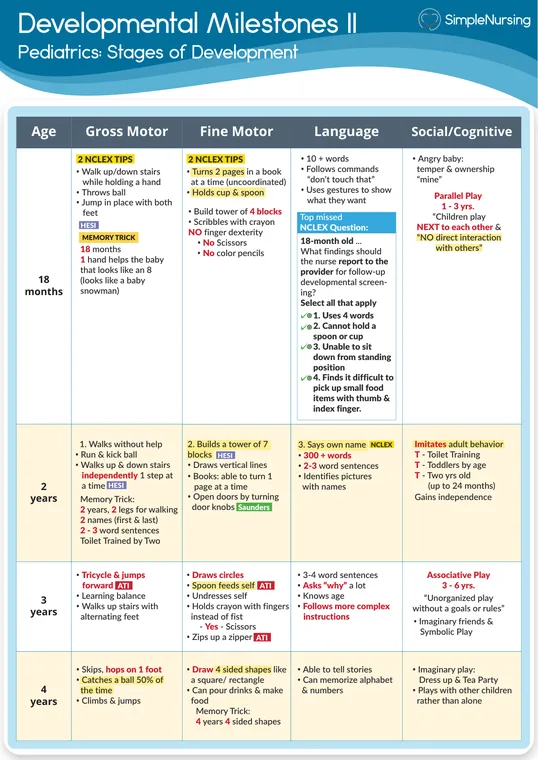
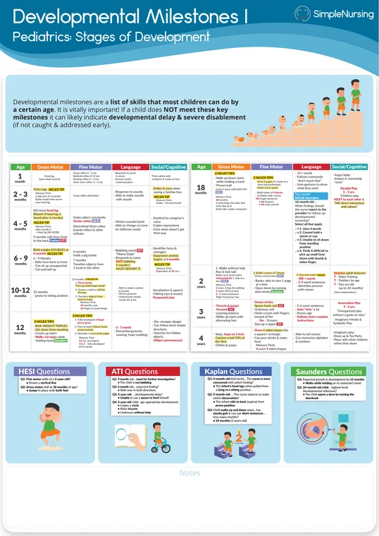

11×17 portrait · Full Weeks 1–13 review
NUR 235 Content Mastery PowerPoint
254 slides. All 141 existing slides plus 113 complete Simple Nursing handouts, organized by module.
Growth and development, and the child in illness — fourteen modules across four exams and a final.

11×17 portrait · Full Weeks 1–13 review
254 slides. All 141 existing slides plus 113 complete Simple Nursing handouts, organized by module.

11×17 portrait · PowerPoint
70 slides with clearer heart-murmur, heart-development, and infant-assessment illustrations. Includes all other respiratory and cardiac graphics, Simple Nursing originals, and labeled current clarifications.




11×17 portrait · PowerPoint
43 infographic pages covering Modules 1–13, including 12 new illustrated overviews of development, blood, infection, breathing, circulation, glucose, digestion and kidney care. Original course details and book/current notes are preserved.
📚 Completed course maps & case studies — Modules 7–13, with answers
⚙ Visual memory workshop — pictures + recall
🧒 Pediatric disease pictures — 74 illustrated cards
🧠 Practice questions — every NUR 235 question
One room per module, in all three courses. Matching, real case questions from your course quizzes, and a visual challenge. Four pairs at a time, no countdown; your progress stays on this phone. Each module page also has a “Play this module” card.
187 cards, seven topics. Six pairs a round, on a stopwatch — a wrong match adds a second. Every match comes with an explanation and a source. Pick a board:
Milestones are CDC checklist ages — the age by which most children have the skill, not the average age they get it.
The vital signs are Fuller’s course chart. That is course recall, not emergency thresholds and not a universal clinical normal. Temperatures are axillary.
On pain, the game labels both rules. Fuller puts numeric ratings at over age 5 on cognitive level; RCH uses over 7. Neither is quietly substituted for the other.
Hints and the answer guides count as help, not a first-try hit. Lecturer and source names stay off the tiles — they are in the answer guide.
The content-review checklists link each required topic to its lesson. Original book and lecture wording is retained in expandable comparison notes where it differs from newer guidance. Use your assigned edition and instructor’s expectations for exam wording, and review the current guidance alongside it.
Every card in the Visual library tagged NUR 235 · M1 · Intro to Pediatric Nursing, grouped by type. Tap a group to open it.
 Med Math Memory TricksExam 1 · Study page →
Med Math Memory TricksExam 1 · Study page →
Basic Chart - Piaget Theory of Cognitive Development I📄 PDF · Opens in Drive →
Visual Chart 1 - Developmental Milestones📄 PDF · Opens in Drive →
Visual Chart - Piaget Theory of Cognitive Development II📄 PDF · Opens in Drive →
Visual Chart 2 - Developmental Milestones📄 PDF · Opens in Drive →
Basic Chart 1 of 2 - Delopmental Milestones📄 PDF · Opens in Drive →Every card in the Visual library tagged NUR 235 · M2 · The Infant (0–1 year), grouped by type. Tap a group to open it.
Every card in the Visual library tagged NUR 235 · M3 · Toddler & Preschooler, grouped by type. Tap a group to open it.
Every card in the Visual library tagged NUR 235 · M4 · School-Age & Adolescent, grouped by type. Tap a group to open it.
Your 11×17 PowerPoint of Simple Nursing and other infographics for Modules 1–4: growth and development, Piaget, Erikson and milestones, pediatric assessment, pain, procedures and poisoning. One plate per slide.
What Dr. Hansen actually said in the review session for this exam — her numbers, her worked calculations, her priority rulings. On an exam, this beats the textbook.
30–60. A rate of 68 with mild flaring in a 6-hour-old is abnormal but may be transient from crying — the first action is to calm and reassess, not call the provider and not start oxygen. Her "least invasive first" rule governs any borderline finding that could be activity-related.6 mo · crawls 7–9 mo · pulls to stand by 9 mo · walks 12–15 mo.18 mo · stairs with help ~2 yr · two-word sentences ~24 mo · scribbling by 18 mo · pedals a tricycle by 3 yr · ties shoelaces around 5, not 4.4 oz/day with water preferred.60 mg/kg/day divided q6h, 3.6 kg, 160 mg/5 mL → 216 mg/day ÷ 4 doses = 54 mg → 1.7 mL.90 mg/kg/day in 2 doses, 12.5 kg, 200 mg/5 mL → 1,125 ÷ 2 = 562.5 mg → 14.1 mL.Exam 2 · Modules 5–7
122 graphics across 110 slides. Blood disorders, cancer, immune response, skin and neurologic care. 11 × 17 portrait PowerPoint.
📊 Open PowerPoint🔍 Browse topics and sources
Original source graphics with editable headings and study notes. Selected teaching updates are included.
Every card in the Visual library tagged NUR 235 · M5 · Hematology & Childhood Neoplasms, grouped by type. Tap a group to open it.
 Childhood CancersExam 2 · Study page →
Childhood CancersExam 2 · Study page →Pediatric hematology: red cell compatibility chart
Every card in the Visual library tagged NUR 235 · M6 · Immune, Infectious Disease, Skin & Burns, grouped by type. Tap a group to open it.
Every card in the Visual library tagged NUR 235 · M7 · Neurologic & Neuromuscular, grouped by type. Tap a group to open it.
What Dr. Hansen actually said in the review session for this exam — her numbers, her worked calculations, her priority rulings. On an exam, this beats the textbook.
4–6 years.4 mL/hr.15 mg/kg, 18 kg, 160 mg/5 mL → 270 mg → 8.4 mL. Do not round up — the digit after the tenths place is 3.Exam 3 · Module 8 · 14 review items
Given age, respiratory signs and intake, connect the airway problem to findings, prioritize oxygenation/airway and hydration, implement indicated treatment and reassess work of breathing, alertness and feeding.
Sources: Maternal & Child textbook, Chapter 40: Child with a Respiratory Disorder

Sources: Maternal & Child textbook, Chapter 40: Child with a Respiratory Disorder · NHLBI: Asthma Care Quick Reference
Sources: Maternal & Child textbook, Chapter 40: Child with a Respiratory Disorder · CDC: Pediatric outpatient antibiotic guidance
A very preterm infant may still need breathing support weeks after birth. Look for fast breathing, inward pulling between or below the ribs, tiring during feeds and slow weight gain.
Assess the infant promptly for deeper retractions or rising oxygen needs. Apnea, severe distress or poor responsiveness needs emergency assistance.
Sources: Maternal & Child textbook, Chapter 40: Child with a Respiratory Disorder · NICE: Bronchiolitis recommendations
Sources: Maternal & Child textbook, Chapter 40: Child with a Respiratory Disorder · CDC: Group A streptococcal pharyngitis
Sources: Maternal & Child textbook, Chapter 40: Child with a Respiratory Disorder · Canadian Paediatric Society: Acute croup management
Sources: Maternal & Child textbook, Chapter 40: Child with a Respiratory Disorder · CDC: Group A streptococcal pharyngitis
Sources: Maternal & Child textbook, Chapter 40: Child with a Respiratory Disorder
Sources: Maternal & Child textbook, Chapter 40: Child with a Respiratory Disorder · Cystic Fibrosis Foundation: Enzymes · Cystic Fibrosis Foundation: Diagnosis guidelines
Sources: Maternal & Child textbook, Chapter 40: Child with a Respiratory Disorder · CDC: Treatment of flu in children
Sources: Maternal & Child textbook, Chapter 40: Child with a Respiratory Disorder · Maternal & Child textbook, Chapter 43: Infectious disorders · CDC: Pediatric COVID care · CDC: COVID outpatient treatment, October 8 2026

Sources: Maternal & Child textbook, Chapter 42: Immune disorders
Sources: Maternal & Child textbook, Chapter 50: Eye and ear disorders · CDC: Pediatric outpatient antibiotic guidance · CDC: Ear infection basics
Every card in the Visual library tagged NUR 235 · M8 · Respiratory, grouped by type. Tap a group to open it.
Browse the visual reference library · Supporting notes, lecture slides and recordings
Exam 3 · Module 9 · 4 review items
Given anatomy and perfusion findings, explain the circulation problem, select a nursing plan for oxygenation/perfusion and growth, identify deterioration and evaluate the response and family readiness for home care.
Sources: Maternal & Child textbook, Chapter 41: Child with a Cardiovascular Disorder · ACR/AAAAI 2025 contrast hypersensitivity consensus
Sources: Maternal & Child textbook, Chapter 41: Child with a Cardiovascular Disorder
Sources: Maternal & Child textbook, Chapter 41: Child with a Cardiovascular Disorder
Sources: Maternal & Child textbook, Chapter 41: Child with a Cardiovascular Disorder
Sources: Maternal & Child textbook, Chapter 41: Child with a Cardiovascular Disorder
Sources: Maternal & Child textbook, Chapter 41: Child with a Cardiovascular Disorder
Sources: CHOP: Pulmonary stenosis · Maternal & Child textbook, Chapter 41: Child with a Cardiovascular Disorder
Sources: Maternal & Child textbook, Chapter 41: Child with a Cardiovascular Disorder · CHOP: Tetralogy of Fallot
Sources: Maternal & Child textbook, Chapter 41: Child with a Cardiovascular Disorder
Sources: CHOP: Tricuspid atresia · Maternal & Child textbook, Chapter 41: Child with a Cardiovascular Disorder
Sources: Maternal & Child textbook, Chapter 41: Child with a Cardiovascular Disorder · CHOP: Pulmonary stenosis · CHOP: Tricuspid atresia · CHOP: Tetralogy of Fallot
Sources: Maternal & Child textbook, Chapter 41: Child with a Cardiovascular Disorder · AHA 2024 Kawasaki scientific statement
Sources: Maternal & Child textbook, Chapter 41: Child with a Cardiovascular Disorder · CDC: Acute rheumatic fever
Every card in the Visual library tagged NUR 235 · M9 · Cardiac, grouped by type. Tap a group to open it.
Browse the visual reference library · Supporting notes, lecture slides and recordings
For every case, start with age and developmental ability: infants need feeding/hydration assessment and caregiver soothing; toddlers benefit from simple choices and play; school-age children can demonstrate care; adolescents need privacy and shared responsibility. Include caregiver teach-back, medication access, school participation and the family’s ability to carry out the plan.
First distinguish mg/kg/day from mg/kg/dose. Verify kilograms, the prescribed range and maximum, doses per day, concentration, final volume and time units. Round at the end using the required precision.
Practice order only: 45 mg/kg/day in two doses, weight 33 lb, supply 400 mg/5 mL. 33 ÷ 2.2 = 15 kg; 45 × 15 = 675 mg/day; 675 ÷ 2 = 337.5 mg/dose; 337.5 × 5 ÷ 400 = 4.21875 mL/dose → 4.2 mL if instructed to round to tenths. This arithmetic example is not a treatment recommendation.
Maintenance-fluid calculations are estimates to check against the prescribed plan; a child with a cardiac disorder may need individualized fluid limits.
Retained as the earlier course source. The topic lessons above give the expanded review and current guidance. Compare the contrast-allergy, sedation, croup and dosage wording with the assigned book and instructor’s exam expectations.
What Dr. Hansen actually said in the review session for this exam — her numbers, her worked calculations, her priority rulings. On an exam, this beats the textbook.
4–6 hr · expect conscious sedation, awake but relaxed, not general anesthesia · no warm compress to the site, heat vasodilates.45 mg/kg/day in 2 doses, 33 lb (÷2.2 = 15 kg), 400 mg/5 mL → 675 ÷ 2 = 337.5 mg → 4.2 mL.100 mL/kg/day first 10 kg, 50 next 10 kg, 20 per kg above 20. Worked: 25 lb = 11.36 kg → 1,000 + (1.36 × 50) = 1,068 mL/day.Every card in the Visual library tagged NUR 235 · M10 · Musculoskeletal, grouped by type. Tap a group to open it.
Every card in the Visual library tagged NUR 235 · M11 · Endocrine & Metabolic, grouped by type. Tap a group to open it.
Every card in the Visual library tagged NUR 235 · M12 · Gastrointestinal, grouped by type. Tap a group to open it.
What Dr. Hansen actually said in the review session for this exam — her numbers, her worked calculations, her priority rulings. On an exam, this beats the textbook.
0.8–2.0 ng/dL.2 mL/kg, 18 kg = 36 mL. Units cancel; no rounding.Full Weeks 1–13 final review · 254 slides · 11×17 portrait. Keeps all 141 existing slides and adds 113 complete Simple Nursing handouts from Drive, organized by module.
Every card in the Visual library tagged NUR 235 · M13 · Renal & Genitourinary, grouped by type. Tap a group to open it.
Every card in the Visual library tagged NUR 235 · M14 · Comprehensive Final Review, grouped by type. Tap a group to open it.
Red wavy underline — an absolute rule. Never, do not, contraindicated, hold it. These are the lines that turn a right answer into a wrong one.
Gold bold — a number that decides a question: a dose, a lab value, a time window, an age cutoff.
Mint italic — a priority or sequence cue. What comes first.
Bold is the term the question is really about. Same system as your NUR 198 pages.
Every question from every week, one at a time, on its own page — plain background, big text, filter by exam or week. This page closes when it opens.
Confirmed against Dr. Hansen's four exam-prep recordings — they match this map almost exactly. Three refinements they force: procedural sedation gets two full items on Exam 1 and belongs in week 1 · burns appear nowhere in any recording, and oncology is one item, not a whole block · renal and GU appear nowhere either, which fits week 13 sitting on a fifth assessment that has no prep recording. Four recordings is not evidence of only four assessments. Originally: there is no NUR 235 course calendar in your Drive folder, but this map is not a guess: the LSC final study guide labels its content by week outright ("Week 5: Hematology/Neoplasms" through "Week 13: Genitourinary"), and each exam guide names the modules it covers. The one soft spot is the internal split of weeks 1–4, which the LSC guide treats as one block — that split comes from the Exam 1 guide's own module headings.
Stated out loud across all four recordings. These are not course-specific — they work on every exam you sit, including NCLEX.
Repeat these and they cost you marks. Corrected here.
0.4–4.0 mIU/L. Her 3–5 range would make a normal TSH look abnormal. The free T4 range she gives (0.8–2.0) is correct.70 is the conventional lower threshold for hypoglycemia, not a comfortable middle. The intervention taught — complex carbohydrate before prolonged exercise — is still correct.4 oz/day maximum for ages 1–3; 4–6 oz applies to ages 4–6.The transcripts are auto-generated and mangle medical words, so Ctrl+F fails on the real spelling. Search the left column instead.
| The transcript says | It means |
|---|---|
| nisocannula | nasal cannula |
| palm mark grass | palmar grasp |
| MPL / MPO status | NPO status |
| emulation / amulation | ambulation |
| monarchy | menarche |
| syphilitis | encephalitis |
| airboro | airborne |
| thrombophytopenia | thrombocytopenia |
| gingivitals | gingival (gum) bleeding |
| supratanteral / tent-toral | supratentorial |
| intracial | intracranial |
| Trottology of phallet | tetralogy of Fallot |
| Patent Ductus Arturus | patent ductus arteriosus |
| Coaractation | coarctation |
| infraclaviclavicular | infraclavicular |
| tachnia | tachypnea |
| RSD | RSV |
| vaginal dilation | vasodilation |
| fluconazone solumedral | fluticasone/salmeterol |
| Adver / Advir | Advair |
| leasing | wheezing |
| expaturin | expectorate |
| Euryseema / Urephema | erythema marginatum |
| fascicular / non-peritic | vesicular / non-pruritic |
| Ray syndrome | Reye syndrome |
| streptocopic caucus | streptococcus |
| frequent rubs | friction rubs |
| Doshen / Doshin | Duchenne |
| shallow birthing | shallow breathing |
| Ordalvani | Ortolani |
| bar load test | Barlow test |
| Propothioracy / Oprah treatment | propylthiouracil |
| a granulocytosis | agranulocytosis |
| Nevitis / ugitis / GIA | uveitis / JIA |
| galean cells | ganglion cells |
| hairsprung | Hirschsprung |
| abdominal dissension | abdominal distension |
| bowel cells | bowel sounds |
| souls | stools |
| waking / poor waking | weight gain |
| urinal put | urine output |
| micronuts per ml | micro-international units per mL |
| conversations | conservation (Piaget) |
| desired over half | desired over have |
| gase exchange | gas exchange |
7–10 days = a dose or a number
NUR 235 · Nursing Care of the Child · built from your own course documents · 🔒 public link · search indexing discouraged